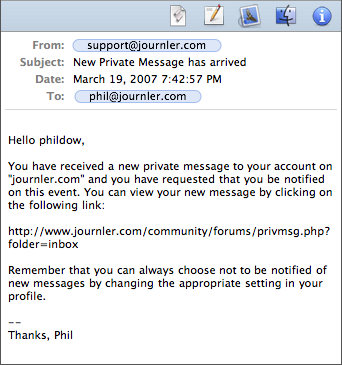

Mail Integration
Mail Integration

Copying Mail Messages to an Entry
Simple copy/paste support is built into Journler. Open Mail and select an email from the list. Do not select any of the email's contents. Rather, select only the table row that corresponds to the message. You can be sure the selection is correct if the row has a dark grey highlight instead of a light one and the text is white.With you message selected choose Copy from the Edit menu. Now switch over to Journler. Select an entry and decide where in the text you would like the message displayed. From the Edit menu select Paste. Journler copies the email to the entry and adds it to the text. Select the associated resource or click the blue link in the text to view the message in Journler's built in message viewer.
Dragging a Mail Message into Journler
You may also drag an email into Journler. Click once and hold down the mouse on a Mail message, moving it to the text of an entry or even a folder or date in the calendar. Journler copies the contents of the message to your entry or creates a new entry for the message, depending where you dragged it.
Viewing Messages
Select a Mail message from the Media Pane or click the blue link in your entry to view the message. Journler loads it into a built in viewer, displaying the html or plain text contents. Once the message loads you may search through the text or begin a new email to the message's sender.There is a limitation though. Journler does not currently support message attachments. Files associated with the email message will not be visible in Journler, and you may encounter problems adding emails with attachments to your entries. You may, however, drag the attachment directly from Mail to an entry. The file is copied regardless of your media preference.